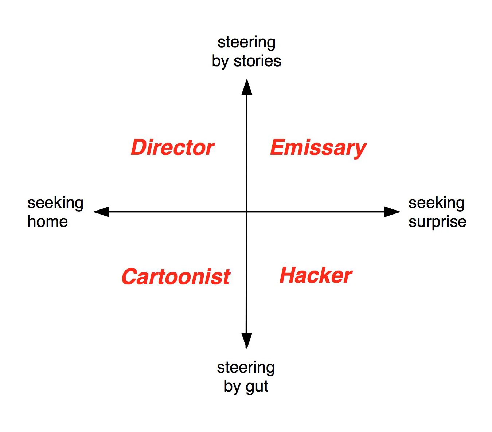

Author: Ian Cheng · Year: 2018 · Type: Book (short, e-book format) → worldto.live · Amazon
Cheng is a visual artist known for AI-driven simulations. This book grew out of his Emissaries trilogy — live simulations shown at MoMA PS1, Serpentine, Carnegie. It formalizes his creative process as a portable framework. His take on worlding functions as advice given to artists broadly, not just to creators who frame their approach as worldbuilding.
“This is not a book about worldbuilding, or how to make your fantasy novel more credible. It’s a book about Worlding. It’s about re-enchanting our complex times by creating futures you can believe in, over and over again.”
The book turns on four ideas, taken up in turn below:
- Aliveness and Autonomy — what a World is: the definition, the formula, finite vs. infinite games, Worlding vs. worldbuilding.
- The Four Masks — the creative-psychology model: Director, Cartoonist, Hacker, Emissary.
- The Container — the medium through which a World first expresses itself.
- The Artist’s Dilemma — the tension between control and autonomy in the creative process.
Aliveness and Autonomy
What Is a World?
(pg 17) A World is a future you can believe in: one that promises to survive its creator, and continue generating drama.
An important feature of this definition of a World is its double promise: when a World can “survive its creator,” that means it has achieved sufficient stability to regulate and safeguard its potentiality without authorial intervention. This is a World’s requirement for Autonomy. When a World can “continue generating drama,” a World is sufficiently interesting for people to care about and want to explore. This is a World’s requirement for Aliveness. When a World is keeping its promise, it continues to be a future you can believe in.
What Is Worlding?
(pg 21) Worlding is the artistic activity of an individual artist conceiving, incubating, triggering, and nurturing a World towards aliveness.
Core Definitions
Aliveness — the World generates its own drama; it is self-regulating and self-generating, not solely dependent on the creator’s output.
Autonomy — the World can sustain itself after the creator exits. Cheng distinguishes these: Worlding is firstly the act of creating a life, then secondly letting that life live itself.
The Aliveness Formula
World’s Aliveness = Evidence Usage / Creator’s Hold
Evidence Usage — the sum of all ways the World is used, discussed, extended, believed in. Films watched, forums active, fan fiction written, other creators influenced. When no one uses or believes in the World, Evidence Usage drops to zero.
Creator’s Hold — the degree of authoritative control the creator maintains over what counts as the World. When Creator’s Hold = 1: the World depends entirely on the creator; when the creator exits, the World goes with them. When Creator’s Hold = 0: the World has Autonomy — it can generate new evidence without the creator’s permission. For example, I throw a party at my home. I provide drinks, board games, music. I choose a time. Perhaps my Creator’s hold is 0.2? How about 1.0? He references Hayao Miyazaki who strongly authored films such as Spirited Away.
Finite Games and Infinite Games
Cheng draws on philosopher James Carse (Finite and Infinite Games, 1986):
- A finite game is played to win — it has defined rules and a defined ending.
- An infinite game is played to keep the game going — if it risks ending, the rules must change to sustain it.
The ultimate infinite game, Carse says, is evolutionary life itself: Nature.
A World is the promise of an infinite game. It is “complex enough that we can generatively inhabit it and create new meaning within its local language.”
Worlding vs. Worldbuilding
Cheng explicitly separates these. Worldbuilding constructs a credible, detailed world — geography, history, rules, consistency. Worlding is the process of making a World come alive and sustain itself. The goal of Worlding is Aliveness → Autonomy.
“A World that fails on its promise to ‘survive its creator’ will rot and die soon after its creator exits… A World that fails on its promise to ‘continue generating drama’ becomes a boring utopia populated by the undead.”
The Four Masks
Cheng’s model of the artist as a crew of inner personas — “masks” — each with different drives, strengths, and blind spots. The artist is not one coherent person but a committee fighting to be heard.
Two axes define the masks:
- Seeking Home vs. Seeking Surprise — whether the mask drives toward stability and known human values, or toward the frontier and the unknown (experimentation)
- Steering by Gut vs. Steering by Story — whether the mask navigates by immediate instinct and feeling, or by long-term arc and context
The masks who Seek Home are rewarded with certainty and security. The masks who Seek Surprise are rewarded with adventure and novelty. The masks who steer by gut are rewarded with immediate results. The masks who steer by story are rewarded with a sense of big picture context. If the Story cannot expand to incorporate the unexpected, the artist turns to the Gut for survival. And if the Gut proves wrong too many times, the artist looks to Stories to put it all into perspective. It’s judging by short term vs. judging by long term.

The Director
Seeking Home · Steering by Story · Makes “Good” Art
Concerned with recovering meaning from complex problems. Believes that structuring a project correctly creates the conditions for meaningful solutions to emerge. Marshals a team, establishes a narrative throughline, works toward mythology.
- Motto: “What’s the story?”
- Psychology: Parent seeking home, Adult steering by story
- Likes: Longform, mythology, satisfying drama, exploring multiple perspectives, learning from and revising the past, backstory, deep character origins, roadmaps, a good profound cry.
- Strengths: Creating the tangible container structure for everyone else to work in. Meaning resonance. Able to narrativize, historicize, mythologize, and organize. Ability to rally a team toward a finite goal that promises to be meaningful.
- Weaknesses: Bothered by open-ended outcomes and unsolved mysteries.
- Compatible with: Cartoonist, who can help the Director stretch to make instantly recognizable/iconic characters that make the long journey more emotionally resonant, peppered with limbic candy.
- Attracted to: Emissary, who can help the Director’s story to expand into sequels, a franchise, a philosophy, or cult following. If only that were manageable and had clear roadmap. Risky with:
- Hacker, who could radicalize the project with new abilities for expression, but the Director doesn’t know how to count on it. Threatens to change the Director’s structure, assembled team, budget, and meaning.
- Favorite forms: feature film, novel, non-fiction bestsellers, treatise, Oscar nominees
- Famous Director-dominant artists: Hayao Miyazaki (animator), Ursula Le Guin (novelist), Jordan Peterson (psychologist), Adam Curtis (filmmaker), Ayn Rand (novelist), Karl Marx (philosopher), Hannah Arendt (philosopher), Margaret Atwood (novelist), Joseph Campbell (mythologist), Homer (epic poet)
The Cartoonist
Seeking Home · Steering by Gut · Makes Flag Art
Concerned with emotional resonance. Reduces complexity into instantly legible signals — characters, symbols, feelings, memes. Plays to the lowest common denominator of human cognition: gut instinct, tribal affiliation, limbic reward.
- Mask Archetype: The spontaneous reformer persona who believes we are united by what we feel, and that that baseline human trait is always ripe to be exploited to alleviate immediate pain and uncertainty. The jokester, the politician, the comedian, the marketer, the persuader, the star.
- Motto: “FREE PIZZA” Psychology: Parent seeking home, Child steering by gut Likes: Feels, memes, slogans, mnemonics, drama, jokes, irony, attention, animals, bumper stickers, dopamine, serotonin
- Strengths: Emotional resonance, characters, archetyping, naming, improv, persuasion
- Weaknesses: reducing humanity to their shared inner animal
- Compatible with: Director, who can furnish a narrative context, enriching the Cartoonist’s characters and behavioral observations, and add the possibility of character growth.
- Attracted to: Hacker, who can offer new magic tricks and psychological models to exploit blind spots in human behavior. Can add wow factor, which adds to limbic resonance.
- Risky with: Emissary, who could radicalize the Cartoonist’s work with an ever-growing platform, but the Cartoonist doesn’t know how to count on it. Emissary threatens to demote the Cartoonist’s work to marketing and shame the Cartoonist, whose instincts don’t fit the values of the Emissary’s World.
- Favorite forms: social media, elections, talk shows, tabloids, advertising, reality tv, clickbait, news, comedy club
- Famous Cartoonist-dominant artists: Oprah Winfrey (talk show host), Andy Warhol (pop artist), Quentin Tarantino (filmmaker), Andy Cohen (reality tv producer), Scott Adams (satirist), Bill Clinton (politician), Kim Kardashian (reality tv personality), Kanye West (recording artist), Mark Twain (satirist)
The Hacker
Seeking Surprise · Steering by Gut · Makes “New” Art
Concerned with disruptive leverage. Sees through the veil of existing worlds to the underlying operating system — the hidden principles and mechanisms. Strips things down to find the real lever, the magic trick, the exploit.
- Mask Archetype: The spontaneous disruptor persona who tinkers, breaks and modifies systems, discovers first principles, and unlocks new advantages along the way. The cheat, the con man, the wizard, the magician.
- Motto: “It might not be science but it works” Psychology: Adult seeking surprise, Child steering by gut Likes: clever shortcuts, models, first principles, altered states, science fiction
- Strengths: Perceives underlying systems. Eye for easy overlooked leverage. Unafraid to break things to find hidden advantage.
- Weaknesses: indifferent to context or presentation
- Compatible with: Emissary, who can create a sustainable culture around the hack.
- Attracted to: Cartoonist. Wants to make their exploit relatable to people, help get a wow factor.
- Risky with: Director, could radicalize with narrative meaning, but the Hacker doesn’t know how to count on it. Threatens to turn the hack in service of an ideological purpose.
- Favorite forms: apps, cookbooks, playbooks, demos, world’s fair, existing systems, complacent industries
- Famous Hacker-dominant artists: Elon Musk (entrepreneur), Nikola Tesla (inventor), Satoshi Nakamoto (blockchain inventor), Dan Barber (chef), Harry Houdini (illusionist)
The Emissary
Seeking Surprise · Steering by Story · Makes Portal Art
Concerned with the long-term health and growth of a living thing. The initiator of Worlding — the one who says let’s create a life, not just a finished object. Thinks on the scale of lifetimes. Absorbs unknowns from Reality and updates the World’s values and systems without losing its core.
“The Emissary is always ‘caught between unravelling old realities and emerging weird ones’ in service of the ongoing health of the World.”
The Emissary is the least practiced mask in art. Its work is thankless: people notice it only when updates don’t serve them, not when the World runs smoothly. The temptation of the Emissary is to hand the World back to the other masks — to let the Director prescribe a final meaning, or the Cartoonist turn it into advertising, or the Hacker sell the superpowers raw.
- Motto: “A future you can believe in”
- Psychology: Adult seeking surprise, Adult steering by story
- Strengths: mission and culture, designing incentives and laws, protecting core values, long-term vision
- Weakness: fits everything into the long term; easy to blame for not serving short-term needs
- Favorite containers: platforms, series, franchises, think tanks, families
- Famous Emissary-dominant figures: Kevin Feige (Marvel), Kathleen Kennedy (Star Wars), Benjamin Franklin, Dalai Lama
Masks Combined
A creation is generally more interesting the more masks it involves. More masks do not result in a more complicated experience for the viewer. On the contrary, if all masks are working together, the viewer feels immersed in a World.
| Combination | Result |
|---|---|
| C only | a joke |
| H only | a trick |
| D only | a moral |
| E only | a rule |
| C + H | a magic act |
| C + D | a story |
| D + H | a playbook |
| C + E | a meme |
| D + E | a wiki |
| H + E | a tool |
| C + D + H | a Gesamtkunstwerk |
| C + D + E | a series |
| C + H + E | an app |
| D + H + E | a cult |
| C + D + H + E | a World |
The Container
Before a World can exist, the artist must choose a container — the medium or form through which the World first expresses itself. A film, a restaurant, a novel, a video game, a religion, an electric car.
The container is not the World. It is a portal to the World.
“A drawing of Mickey Mouse is a low resolution, low dimensional manifestation of the World of Disney. A Mickey cartoon is a bit higher. And Disneyland is a high resolution, high dimensional manifestation of the World of Disney. But even a trip to Disneyland is not a one-to-one experience of the World of Disney itself.”
The Director chooses the container. The Emissary checks whether it implies interesting consequences — whether it has potential for Aliveness.
Declarative vs. Interactive
Containers exist on a spectrum:
Declarative (novel, film, sermon) — the creator declares a world and the audience accepts it. More fantastical potential. Higher suspension of disbelief required. The Cartoonist leads: great characters are needed to make the World sticky.
Interactive (restaurant, app, video game, baby) — the container is inhabited and used. More pragmatically realized. More directly suggests how the World will function. The Hacker leads: a great hack or superpower is needed to make it distinct.
“If you value the pragmatic realization of the eventual World: interactive container > declarative container. If you value the fantastical potential: declarative container > interactive container.”
The Hacker-Led Approach (Interactive Containers)
- Discover a hack — test it, confirm it works
- Study the hack to understand why it works reliably
- See where the hack goes too far; make laws to regulate it
- Let the Cartoonist develop characters who embody and violate those laws
- Let the Director create a mythological narrative that situates the hack within meaning
The Cartoonist-Led Approach (Declarative Containers)
- Devise a character with an inner contradiction
- Describe the character by imagining where it lives — the living conditions that created it
- The living conditions imply the laws of the World
- Imagine disruptors of those laws and the drama that follows
The Container as Contract
“In choosing a container, you are making an explicit contract with the viewer… In return, I will work to surprise your expectations of what is possible by stretching the container a bit farther than you thought it could go.”
The Artist’s Dilemma
Art is not an object, but a special kind of communication between an artist and an audience. It’s a communication for when words won’t do. For when you want to communicate something more interesting, nutritious, complex, or strange. But since high bandwidth telepathy doesn’t exist yet, a mediating object needs to be crafted to articulate this communication: the artwork.
If an artwork is a ship, then the artist is its crew, the content is its cargo, and the destination port is the audience where the communication is received, where the ship docks and the cargo is delivered.
Key Quotes
“A World is conceived when a creator decides to pick some part of Reality and start believing in it again.”
“Simple rules lead to complex behavior. Complicated rules lead to stupid behavior.” — Andrew Hunt, The Pragmatic Programmer, cited by Cheng
“A poem is never finished, only abandoned.” — Paul Valéry, on granting Autonomy